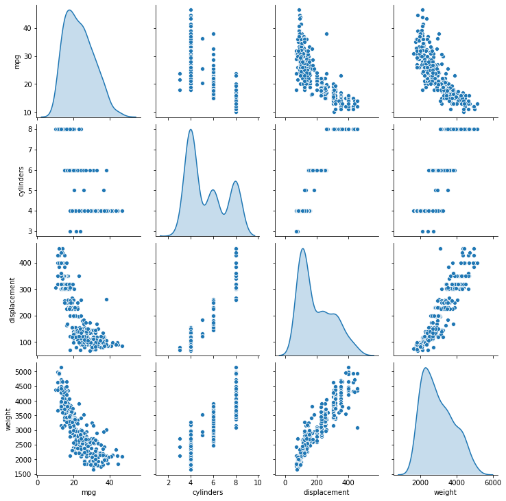
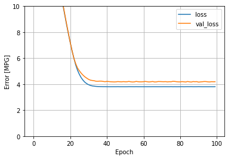
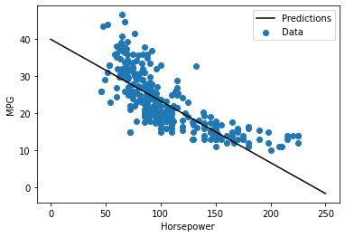
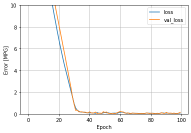
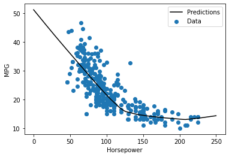
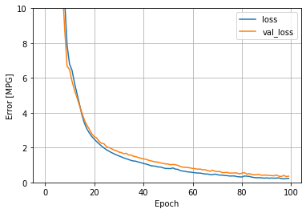
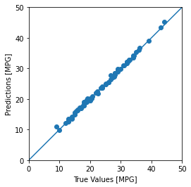
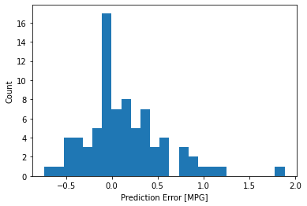

Predicción de la eficiencia de combustible usando regresión con Early Stopping¶
30:00 min | Última modificación: Mayo 5, 2021 | [YouTube]
Adaptado de https://www.tensorflow.org/tutorials/keras/regression
Importación de librerías¶
[1]:
import warnings
warnings.filterwarnings("ignore")
[2]:
import logging
import matplotlib.pyplot as plt
import numpy as np
import pandas as pd
import seaborn as sns
import tensorflow as tf
from tensorflow import keras
from tensorflow.keras import layers
from tensorflow.keras.layers.experimental import preprocessing
#
# Precisión en pantalla de NumPy
#
np.set_printoptions(precision=3, suppress=True)
#
# Establece el nivel de reporte en
# pantalla de TensorFlow
#
logger = tf.get_logger().setLevel(logging.ERROR)
print(tf.__version__)
2.4.1
Carga y configuración del dataset¶
[3]:
url = "https://raw.githubusercontent.com/jdvelasq/datalabs/master/datasets/auto-mpg.csv"
raw_dataset = pd.read_csv(
url,
na_values='?',
sep=",",
)
raw_dataset.pop('car name')
dataset = raw_dataset.copy()
dataset.tail()
[3]:
| mpg | cylinders | displacement | horsepower | weight | acceleration | model year | origin | |
|---|---|---|---|---|---|---|---|---|
| 393 | 27.0 | 4 | 140.0 | 86.0 | 2790 | 15.6 | 82 | 1 |
| 394 | 44.0 | 4 | 97.0 | 52.0 | 2130 | 24.6 | 82 | 2 |
| 395 | 32.0 | 4 | 135.0 | 84.0 | 2295 | 11.6 | 82 | 1 |
| 396 | 28.0 | 4 | 120.0 | 79.0 | 2625 | 18.6 | 82 | 1 |
| 397 | 31.0 | 4 | 119.0 | 82.0 | 2720 | 19.4 | 82 | 1 |
[4]:
dataset.info()
<class 'pandas.core.frame.DataFrame'>
RangeIndex: 398 entries, 0 to 397
Data columns (total 8 columns):
# Column Non-Null Count Dtype
--- ------ -------------- -----
0 mpg 398 non-null float64
1 cylinders 398 non-null int64
2 displacement 398 non-null float64
3 horsepower 392 non-null float64
4 weight 398 non-null int64
5 acceleration 398 non-null float64
6 model year 398 non-null int64
7 origin 398 non-null int64
dtypes: float64(4), int64(4)
memory usage: 25.0 KB
Exploración del dataset¶
[5]:
#
# Datos NA
#
dataset.isna().sum()
[5]:
mpg 0
cylinders 0
displacement 0
horsepower 6
weight 0
acceleration 0
model year 0
origin 0
dtype: int64
[6]:
#
# Se borran las filas NA
#
dataset = dataset.dropna()
[7]:
#
# One-hot encoding
#
dataset["origin"] = dataset.origin.map(
{
1: "USA",
2: "Europe",
3: "Japan",
}
)
dataset.tail()
[7]:
| mpg | cylinders | displacement | horsepower | weight | acceleration | model year | origin | |
|---|---|---|---|---|---|---|---|---|
| 393 | 27.0 | 4 | 140.0 | 86.0 | 2790 | 15.6 | 82 | USA |
| 394 | 44.0 | 4 | 97.0 | 52.0 | 2130 | 24.6 | 82 | Europe |
| 395 | 32.0 | 4 | 135.0 | 84.0 | 2295 | 11.6 | 82 | USA |
| 396 | 28.0 | 4 | 120.0 | 79.0 | 2625 | 18.6 | 82 | USA |
| 397 | 31.0 | 4 | 119.0 | 82.0 | 2720 | 19.4 | 82 | USA |
[8]:
#
# Genera variables dummy para las columnas alfanuméricas.
# Note que la columna Origin se remueve del dataset
#
dataset = pd.get_dummies(
dataset,
columns=["origin"],
prefix="",
prefix_sep="",
)
dataset.tail()
[8]:
| mpg | cylinders | displacement | horsepower | weight | acceleration | model year | Europe | Japan | USA | |
|---|---|---|---|---|---|---|---|---|---|---|
| 393 | 27.0 | 4 | 140.0 | 86.0 | 2790 | 15.6 | 82 | 0 | 0 | 1 |
| 394 | 44.0 | 4 | 97.0 | 52.0 | 2130 | 24.6 | 82 | 1 | 0 | 0 |
| 395 | 32.0 | 4 | 135.0 | 84.0 | 2295 | 11.6 | 82 | 0 | 0 | 1 |
| 396 | 28.0 | 4 | 120.0 | 79.0 | 2625 | 18.6 | 82 | 0 | 0 | 1 |
| 397 | 31.0 | 4 | 119.0 | 82.0 | 2720 | 19.4 | 82 | 0 | 0 | 1 |
Conjuntos de entrenamiento y prueba¶
[9]:
#
# El uso de esta función es más simple que el uso de
# train_test_split
#
train_dataset = dataset.sample(
frac=0.8,
random_state=0,
)
test_dataset = dataset.drop(train_dataset.index)
Inspección de los datos¶
[10]:
sns.pairplot(
train_dataset[
[
"mpg",
"cylinders",
"displacement",
"weight",
]
],
diag_kind="kde",
)
[10]:
<seaborn.axisgrid.PairGrid at 0x7fa9d7d9e3c8>

[11]:
#
# Estadísticos
#
train_stats = train_dataset.describe()
train_stats.pop("mpg")
train_stats = train_stats.transpose()
train_stats
[11]:
| count | mean | std | min | 25% | 50% | 75% | max | |
|---|---|---|---|---|---|---|---|---|
| cylinders | 314.0 | 5.477707 | 1.699788 | 3.0 | 4.00 | 4.0 | 8.00 | 8.0 |
| displacement | 314.0 | 195.318471 | 104.331589 | 68.0 | 105.50 | 151.0 | 265.75 | 455.0 |
| horsepower | 314.0 | 104.869427 | 38.096214 | 46.0 | 76.25 | 94.5 | 128.00 | 225.0 |
| weight | 314.0 | 2990.251592 | 843.898596 | 1649.0 | 2256.50 | 2822.5 | 3608.00 | 5140.0 |
| acceleration | 314.0 | 15.559236 | 2.789230 | 8.0 | 13.80 | 15.5 | 17.20 | 24.8 |
| model year | 314.0 | 75.898089 | 3.675642 | 70.0 | 73.00 | 76.0 | 79.00 | 82.0 |
| Europe | 314.0 | 0.178344 | 0.383413 | 0.0 | 0.00 | 0.0 | 0.00 | 1.0 |
| Japan | 314.0 | 0.197452 | 0.398712 | 0.0 | 0.00 | 0.0 | 0.00 | 1.0 |
| USA | 314.0 | 0.624204 | 0.485101 | 0.0 | 0.00 | 1.0 | 1.00 | 1.0 |
[12]:
#
# Extracción de la variable dependiente
#
train_features = train_dataset.copy()
test_features = test_dataset.copy()
train_labels = train_dataset.pop('mpg')
test_labels = test_dataset.pop('mpg')
Normalización de los datos¶
[13]:
train_dataset.describe().transpose()[['mean', 'std']]
[13]:
| mean | std | |
|---|---|---|
| cylinders | 5.477707 | 1.699788 |
| displacement | 195.318471 | 104.331589 |
| horsepower | 104.869427 | 38.096214 |
| weight | 2990.251592 | 843.898596 |
| acceleration | 15.559236 | 2.789230 |
| model year | 75.898089 | 3.675642 |
| Europe | 0.178344 | 0.383413 |
| Japan | 0.197452 | 0.398712 |
| USA | 0.624204 | 0.485101 |
[14]:
#
# Crea una capa para proprocesar los datos
#
normalizer = preprocessing.Normalization()
#
# Entrena (adapta) el modelo
#
normalizer.adapt(np.array(train_features))
#
normalizer.mean.numpy()
[14]:
array([ 23.311, 5.478, 195.318, 104.869, 2990.252, 15.559,
75.898, 0.178, 0.197, 0.624], dtype=float32)
[16]:
np.sqrt(normalizer.variance.numpy())
[16]:
array([ 7.716, 1.697, 104.165, 38.036, 842.554, 2.785, 3.67 ,
0.383, 0.398, 0.484], dtype=float32)
Regresión lineal con una sola variable¶
[17]:
#
# Se copian los valores de la columna horsepower
#
horsepower = np.array(train_features["horsepower"])
#
# Se crea un normalizador que recibe una sola entrada
#
horsepower_normalizer = preprocessing.Normalization(
input_shape=[
1,
],
)
#
# Entrena el normalizador
#
horsepower_normalizer.adapt(horsepower)
[18]:
#
# Crea una red neuronal de una sola capa con
# neurona de salida y activación lineal
# g(x) = x
#
horsepower_model = tf.keras.Sequential([
horsepower_normalizer,
layers.Dense(units=1)
])
horsepower_model.summary()
Model: "sequential"
_________________________________________________________________
Layer (type) Output Shape Param #
=================================================================
normalization_1 (Normalizati (None, 1) 3
_________________________________________________________________
dense (Dense) (None, 1) 2
=================================================================
Total params: 5
Trainable params: 2
Non-trainable params: 3
_________________________________________________________________
[19]:
#
# El modelo aun no ha sido entrenado, pero tiene
# pesos aleaotrios en las conexiones. Se pronostican
# los primeros 10 valores
#
horsepower_model.predict(horsepower[:10])
[19]:
array([[-0.428],
[-0.242],
[ 0.79 ],
[-0.6 ],
[-0.543],
[-0.213],
[-0.643],
[-0.543],
[-0.141],
[-0.242]], dtype=float32)
[21]:
#
# Pesos iniciales de las conexiones
#
for v in horsepower_model.trainable_weights:
print(v.numpy())
print()
[[0.545]]
[0.]
[25]:
#
# Los pesos de las conexiones también pueden
# verse a traves de la propiedad weights
#
for v in horsepower_model.layers[1].weights:
print(v.numpy())
[[0.545]]
[0.]
[26]:
#
# Compila el modelo
#
horsepower_model.compile(
optimizer=tf.optimizers.Adam(learning_rate=0.1),
loss="mean_absolute_error",
)
[27]:
#
# Entrena el modelo
#
history = horsepower_model.fit(
train_features["horsepower"],
train_labels,
epochs=100,
verbose=0,
#
# Separa el 20% de los datos de entrenamiento
# para validación
#
validation_split=0.2,
)
hist = pd.DataFrame(history.history)
hist['epoch'] = history.epoch
hist.tail()
[27]:
| loss | val_loss | epoch | |
|---|---|---|---|
| 95 | 3.802158 | 4.181492 | 95 |
| 96 | 3.803483 | 4.171537 | 96 |
| 97 | 3.803481 | 4.192664 | 97 |
| 98 | 3.802019 | 4.187525 | 98 |
| 99 | 3.807205 | 4.189559 | 99 |
[32]:
def plot_loss(history):
plt.plot(history.history["loss"], label="loss")
plt.plot(history.history["val_loss"], label="val_loss")
plt.ylim([0, 10])
plt.xlabel("Epoch")
plt.ylabel("Error [MPG]")
plt.legend()
plt.grid(True)
plot_loss(history)

[34]:
test_results = {}
test_results["horsepower_model"] = horsepower_model.evaluate(
test_features["horsepower"],
test_labels,
verbose=0,
)
[35]:
def plot_horsepower(x, y):
plt.scatter(
train_features["horsepower"],
train_labels,
label="Data",
)
plt.plot(x, y, color="k", label="Predictions")
plt.xlabel("Horsepower")
plt.ylabel("MPG")
plt.legend()
x = tf.linspace(0.0, 250, 251)
y = horsepower_model.predict(x)
plot_horsepower(x, y)

Regresión lineal con varias variables¶
[36]:
linear_model = tf.keras.Sequential([
normalizer,
layers.Dense(units=1)
])
linear_model.predict(train_features[:10])
[36]:
array([[-1.402],
[-0.528],
[ 0.215],
[ 0.227],
[ 0.338],
[ 0.109],
[ 0.235],
[ 1.038],
[-0.71 ],
[-1.267]], dtype=float32)
[37]:
linear_model.layers[1].kernel
[37]:
<tf.Variable 'dense_1/kernel:0' shape=(10, 1) dtype=float32, numpy=
array([[ 0.083],
[ 0.304],
[ 0.394],
[-0.315],
[ 0.367],
[-0.346],
[ 0.638],
[ 0.172],
[-0.039],
[-0.516]], dtype=float32)>
[38]:
linear_model.compile(
optimizer=tf.optimizers.Adam(learning_rate=0.1),
loss='mean_absolute_error')
[39]:
history = linear_model.fit(
train_features,
train_labels,
epochs=100,
verbose=0,
validation_split=0.2,
)
[40]:
plot_loss(history)

[41]:
test_results["linear_model"] = linear_model.evaluate(
test_features,
test_labels,
verbose=0,
)
Red neuronal con una sola variable¶
[42]:
def build_and_compile_model(norm):
model = keras.Sequential(
[
norm,
layers.Dense(64, activation="relu"),
layers.Dense(64, activation="relu"),
layers.Dense(1),
]
)
model.compile(
loss="mean_absolute_error",
optimizer=tf.keras.optimizers.Adam(0.001),
)
return model
dnn_horsepower_model = build_and_compile_model(horsepower_normalizer)
dnn_horsepower_model.summary()
Model: "sequential_2"
_________________________________________________________________
Layer (type) Output Shape Param #
=================================================================
normalization_1 (Normalizati (None, 1) 3
_________________________________________________________________
dense_2 (Dense) (None, 64) 128
_________________________________________________________________
dense_3 (Dense) (None, 64) 4160
_________________________________________________________________
dense_4 (Dense) (None, 1) 65
=================================================================
Total params: 4,356
Trainable params: 4,353
Non-trainable params: 3
_________________________________________________________________
[44]:
history = dnn_horsepower_model.fit(
train_features["horsepower"],
train_labels,
validation_split=0.2,
verbose=0,
epochs=100,
)
[45]:
x = tf.linspace(0.0, 250, 251)
y = dnn_horsepower_model.predict(x)
plot_horsepower(x, y)

[47]:
test_results["dnn_horsepower_model"] = dnn_horsepower_model.evaluate(
test_features["horsepower"],
test_labels,
verbose=0,
)
Red neuronal con todas las variables¶
[48]:
dnn_model = build_and_compile_model(normalizer)
dnn_model.summary()
Model: "sequential_3"
_________________________________________________________________
Layer (type) Output Shape Param #
=================================================================
normalization (Normalization (None, 10) 21
_________________________________________________________________
dense_5 (Dense) (None, 64) 704
_________________________________________________________________
dense_6 (Dense) (None, 64) 4160
_________________________________________________________________
dense_7 (Dense) (None, 1) 65
=================================================================
Total params: 4,950
Trainable params: 4,929
Non-trainable params: 21
_________________________________________________________________
[49]:
history = dnn_model.fit(
train_features,
train_labels,
validation_split=0.2,
verbose=0,
epochs=100,
)
[50]:
plot_loss(history)

[51]:
test_results["dnn_model"] = dnn_model.evaluate(
test_features,
test_labels,
verbose=0,
)
Desempeño del modelo¶
[52]:
pd.DataFrame(test_results, index=['Mean absolute error [MPG]']).T
[52]:
| Mean absolute error [MPG] | |
|---|---|
| horsepower_model | 3.660613 |
| linear_model | 0.131657 |
| dnn_horsepower_model | 2.942404 |
| dnn_model | 0.330818 |
Pronostico¶
[53]:
test_predictions = dnn_model.predict(test_features).flatten()
a = plt.axes(aspect='equal')
plt.scatter(test_labels, test_predictions)
plt.xlabel('True Values [MPG]')
plt.ylabel('Predictions [MPG]')
lims = [0, 50]
plt.xlim(lims)
plt.ylim(lims)
_ = plt.plot(lims, lims)

[54]:
error = test_predictions - test_labels
plt.hist(error, bins=25)
plt.xlabel('Prediction Error [MPG]')
_ = plt.ylabel('Count')

Almacenamiento y recuperación del modelo en disco¶
[58]:
dnn_model.save("dnn_model")
reloaded = tf.keras.models.load_model("dnn_model")
test_results["reloaded"] = reloaded.evaluate(
test_features,
test_labels,
verbose=0,
)
reloaded = tf.keras.models.load_model("dnn_model")
test_results["reloaded"] = reloaded.evaluate(
test_features,
test_labels,
verbose=0,
)
pd.DataFrame(test_results, index=["Mean absolute error [MPG]"]).T
[58]:
| Mean absolute error [MPG] | |
|---|---|
| horsepower_model | 3.660613 |
| linear_model | 0.131657 |
| dnn_horsepower_model | 2.942404 |
| dnn_model | 0.330818 |
| reloaded | 0.330818 |